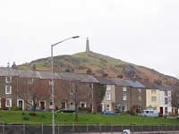
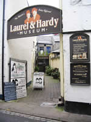
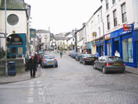
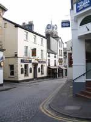

Ulverston Tourist Information

{kind=link}

{kind=link}
The town has quite a maritime past. Locally mined and produced goods were shipped to the coast for export along the shortest, broadest and deepest canal in the country.
The street-markets play an important part in the town's life with the colourful displayed assortments of items on view and for sale.
Occasionally the Town Crier will be in attendance lending his voice to that of the traders. During the annual Charter Festival, the traders sport period costumes, providing first class photo opportunities.

{kind=link}
The Fisheries nearby, offer anglers the choice of Carp, Tench, Brown Trout and Pike. Sand Hall Ponds, one of the fisheries, provides disabled access.
St. Marys Church, dates from the early 1100's. It's East stained-glass window contains the Coats of Arms of several prominent families featured in local history.

{kind=link}
It is a hospitable community which knows how to enjoy itself. This is particularly evident at times of the regular festivals and events of the summer months.
How to get there:
By rail: From the West Coast Main Line, change at Carnforth for Ulverston.
By road: From the M6 motorway, exit at J36 and take the A590 via Newby Bridge.
 Find out more information by visiting the Furness website: www.boostingfurness.co.uk Find out more information by visiting the Furness website: www.boostingfurness.co.ukYou may also download their very useful Discover Furness brochure here. The file is quite large (20mb) and may take some time to download with slower connections. Hard copies are available from the site also. Buying a hard copy entitles you to discounts at participating attractions. |
Attractions in Ulverston |
Laurel & Hardy Museum
Stan Laurel was born in Ulverston. The museum, dedicated to him and Oliver Hardy, holds a wealth of memorabilia and includes a small cinema showing films and documentaries throughout the day. It’s a fascinating insight in to their lives and careers. Opening times. February – December, 10am- 4.30pm. Monday to Saturday. Sundays10.30am. to 4.30pm. Closed during January. Telephone 01229-582292.
www.laurel-and-hardy-museum.co.uk
Lakes Liesure Centre
Great family activity centre offering a choice of gymnasium facilities, heated swimming pool, the regions largest tennis centre, Astroturf sports and bowling green.
Priory Road, Ulverston.
Phone 01229 584110 or 01229 581123
Swarthmoor Hall
This fine old 16th C. Manor House and Gardens close to Ulverston, was an important base for the establishment and development of the regions Quaker Movement. Visitors are invited to informative tours of its historic rooms, strolls in the peaceful grounds and to view the prolific display of purple crocus which bloom in the field adjoining the house during late February / early March.
Cumbria Crystal
One of the few remaining working crystal factories in the country. The crystal made here in Ulverston is of the finest quality and so highly regarded that it has the distinction of being the choice of British Embassies throughout the world. Enjoy a free viewing of the production techniques, browse the discounted prices in the factory shop, eat and relax in the Lighthouse Café and visit the Gateway to Furness Exhibition. Free on site parking and easy access.
Phone 01229 584400
Conishead Priory & Buddhist Temple
A beautiful Gothic Mansion and home to an International Buddhist Centre. Guided tours of house and temple, peaceful woodland strolls to Morecambe Bay, café and gift shop. Find us two miles from Ulverston on the A 5087 coast road. Free parking and admission.
www.manjushri.org
www.conisheadpriory.org
Hoad Hill Monument
Officially titled the Sir John Barrow Monument and known locally as “the pepper pot”, this 100 feet tall structure intentionally built to resemble Eddystone Lighthouse, is Ulverstons most well known landmark. There are occasions when it is open to the public and these are indicated by a flag flying outside the monument. However, it’s well worth the 400 feet ascent just to take in the view of Morecambe Bay and the fells of the Furness Peninsula. www.sirjohnbarrowmonument.co.uk
Coronation Hall
Cumbria’s largest theatre of 600 seats. It caters for every taste with choices of choral evenings, opera, pop, musicals and orchestral performances together with many other events throughout the year. It is also the premier venue for Ulverstons festival programmes.
www.corohall.co.uk
Lantern House
A new arts complex and cultural centre which works closely with local artists. Holds a surprise package for the visitor. A welcome addition to Ulverston attractions.
www.lanternhouse.org
Cinema
The Roxy Cinema, Brogden Street, Ulverston. Modern sound and projection systems.
Gleaston Water Mill
A working water corn mill standing close to the ruins of Gleaston Castle. It dates from 1774 and is on the site of an earlier 14th C. building. Visitors to Ulverston are invited to go and see the waterwheel and machinery in operation between 10.30am and 5pm on Tuesdays - Sundays and public holidays all year round. Whilst you’re there, take refreshments at Dusty Millers Tea & Coffee Shop and browse Pigs Whisper Country Store in the adjoining buildings.
www.watermill.co.uk
Walking
The Furness areas wide choice of walks for all abilities is very popular and Ulverston is an ideal starting point. Visitors can begin with the Historic Town Trails in and close to Ulverston which include the mild ascent of Hoad Hill to the Sir John Barrow Monument. All these walks begin from the Tourist Information Centre. Especially pleasing are the Routes of Three Jewels of Lakeland. These trails take in the lovely Duddon Valley and other wooded areas close to the village of Broughton Mills. The Cistercian Way is a little more testing extending to both the Furness and Cartmel fells. The 70 miles of the Cumbria Way is a well trod medium ranked journey.
www.explorelowfurness.co.uk
www.duddonvalley.co.uk
www.ulverston.net
Shopping
The shops, indoor market and the lively twice weekly outdoor market have something of everything for everyone. Together with local products and specialties there are well known High Street brands earning Ulverston a respected name with shoppers.
Food and Drink in Ulverston |
Miners Arms, Swarthmoor near Ulverston
Now offering homemade food lunchtimes and evenings Wednesday - Saturday from noon - 2pm and 6pm - 8.30pm. Sundays, noon - 6pm.
Phone:
01229 583941
British Raj Restaurant & Takeaway
20, King Street.
Phone: 01229 588104 / 586335
Naaz Indian Cuisine
15-17 Queen Street.
Phone: 01229 588947
Amigo Mexican Steak House
30, Cavendish Street.
Phone: 01229 587616
The Coot on the Tarn Restaurant
Great Urswick, Near Ulverston.
Phone: 01229 586264
World Peace Café
5 Cavendish Street. Delicious vegetarian food and drinks. Above the café is a Meditation Room for regular evening and weekend meditation classes.
www.worldpeacecafe.org
Transportation in Ulverston |